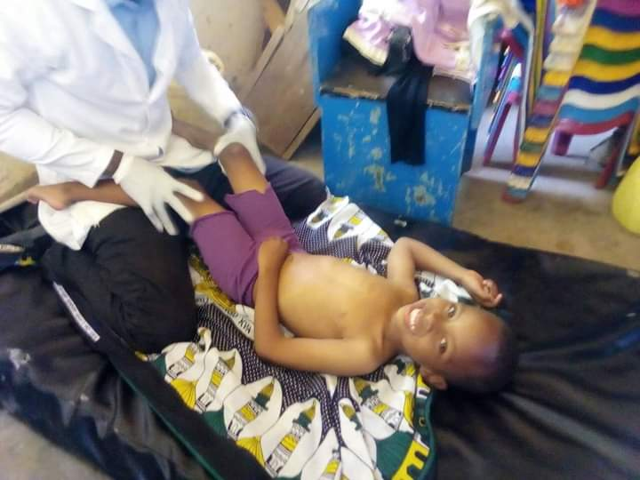

<!DOCTYPE html>
<html>
    <head>
      <link href="css/bootstrap.css" rel="stylesheet" type="text/css">
    <link href="css/styles.css" rel="stylesheet" type="text/css">
    <script
    src="https://code.jquery.com/jquery-3.5.1.js"
    integrity="sha256-QWo7LDvxbWT2tbbQ97B53yJnYU3WhH/C8ycbRAkjPDc="
    crossorigin="anonymous"></script>
      <script src="./js/scripts.js"></script>
    </head>
</html>
<body>
<div class="section4">
    <h4>EVENTS</h4>
    <div class="whatwedo">
    <div class="row toggles">
      <div class="col-md-4 design">
        <div id="hidden-design">
        
        </div>
        <h5>DESIGN</h5>
        <p id="shown-design" class="toggle">
          Our design practice offers a full range of services<br>including brand strategy,interaction and visual design<br>and user experience testing.<br>Throughout your project,our designers create and<br>implement visual design and workflows,solicit users<br>feedback and work with you to make sure what gets built<br>is what is needed.
        </p>
      </div>
      <div class="col-md-4 development">
        <div id="hidden-development">
        
        </div>
        <h5>DEVELOPMENT</h5>
        <p id="shown-development" class="toggle1">
          All engineers are fluent in the latest enterprise ,mobile<br>and webdevelopment technologies.<br>They collaborate with your team to write and improve<br>code on a daily basis,using proven practices such as<br>test-driven development and pair programming.
        </p>
      </div>
      <div class="col-md-4 product">
        <div id="hidden-product">
        
        </div>
        <h5>PRODUCT MANAGEMENT</h5>
        <p id="shown-product" class="toggle2">
          Planning and development is iterative.Because we are<br>constantly coding and testing,the products we build are<br>constantly always ready to go live.<br>This iterative process allows for changes as businesses<br>requirments evolve.
        </p>
      </div>
  </body>